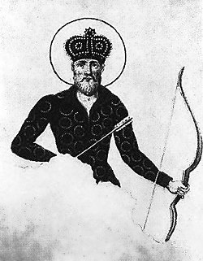
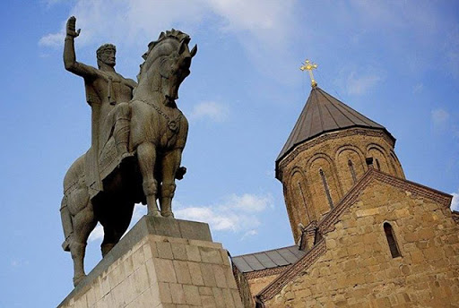
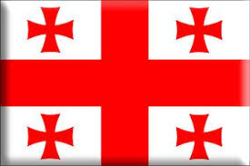

ვახტანგ გორგასალი

ქართლის მეფე V საუკუნის II ნახევარში. „გორგასალი“ (სპარს. მგლისთავა) სპარსელებმა შეარქვეს. ვახტანგ გორგასალი გამეფდა 15 წლისა, იმეფა 45 წელი, აღესრულა 60 წლისა. საქართველოს მართლმადიდებელი ეკლესიის მიერ შერაცხულია წმინდანად. მისი მოხსენიების დღეა 13 დეკემბერი.
ყრმობა და სიჭაბუკე

458 წელს თხუთმეტი წლის ვახტანგი ქართლის ტახტზე ავიდა. მან ტახტზე ასვლისთანავე ბრძანა საომარი სამზადისი და 16 წლის ასაკში საპასუხო ლაშქრობა მოაწყო ჩრდილოეთ კავკასიაში, რომელიც ალანთა დამარცხებით დასრულდა. ვახტანგმა დაიმორჩილა ალანები, გამოიხსნა ტყვეები, მათ შორის, თავისი მცირეწლოვანი და -მირანდუხტი. დაიკავა დარიალის ციხე, იქ თავისი მეციხოვნეები ჩააყენა და გაამაგრა ქართლის ჩრდილოეთი საზღვარი.
ვახტანგ გორგასლის ოჯახი

I მეუღლე — დედოფალი ბალენდუხტი, სპარსეთის შაჰის ჰორმიზდ III-ის ასული. ბალენდუხტ დედოფალმა უშვა ვახტანგს ძე და ასული (ტყუპი) და მშობიარობას გადაყვა. ვახტანგმა ძეს უწოდა დაჩი ანუ დარჩილი. დაჩი გახდა ტახტის მემკვიდრე, რომელიც მამის გარდაცვალების შემდეგ გამეფდა. მეფობდა დაახლოებით 502-514 წ.წ.